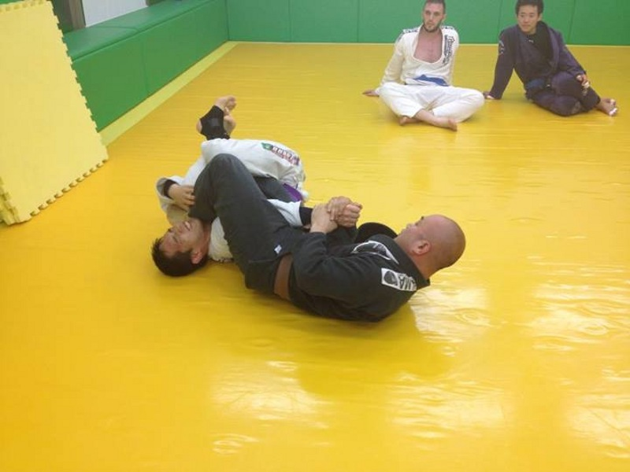

Berimbolo
Sun 30 June 2013 by Matt HelmerPajama-Flipping?
I got Berimbolo’d. It was probably a pretty slick move to watch and I certainly didn’t see it coming or realize what was happening until my opponent had taken my back and put me in a rear naked choke. Definitely an effective move on the mat. However, part of me couldn’t help but say “OK, that’s cool, but it probably wouldn’t work too well off the mats.”
If, like most non-jiu jitsu geeks, you don’t know what the heck a Berimbolo is, this video is a good intro/demo.
A whole lot of Berimboloing by Rafael Mendes
Basically, it’s a maneuver that has gained a lot of popularity in sport jiu jitsu over the past several years, thanks to the awesome Mendes brothers. My understanding is that there are various versions of the Berimbolo, but the basic maneuver involves sweeping your opponent onto the ground and taking his/her back.
End result: check mate.
That said, it involves inverting yourself while holding onto someone's belt/gi, something that would not work too well and could even result in you knocking yourself out on a hard surface. I would be curious to see an example of a Berimbolo succesfully executed off the mat.
I’m definitely a firm believer in live sparring at (nearly) full intensity, but my main objective in learning jiu jitsu is to strengthen my self defense abilities. As such, I don’t think putting a large amount of effort into an “on the mat only” move is what I’m looking for. I searched for "Berimbolo in MMA" but couldn't find anything. Maybe I’ll get Berimbolo’d in a competition, but so be it. I prefer to focus on more practical techniques, like the below.
